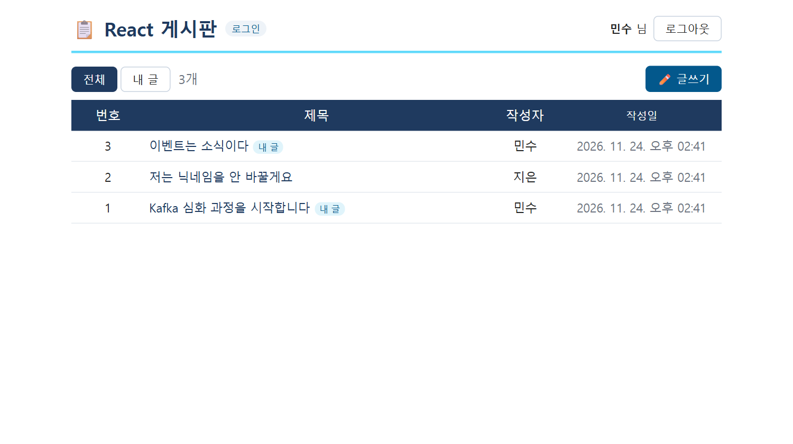
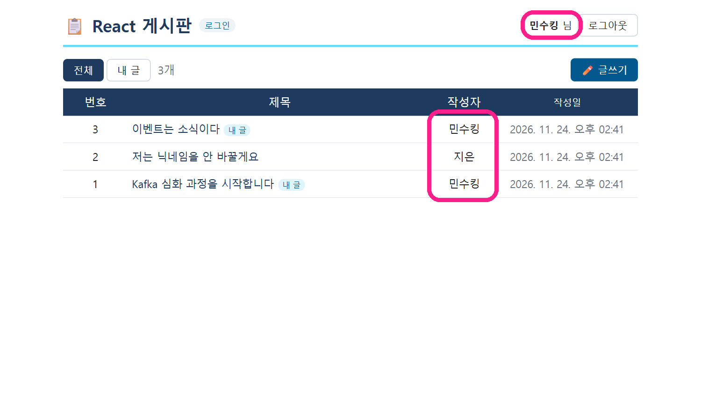

6장. 실험 - 따라잡기 · 옛 토큰 · Kafka 가 꺼지면
학습 목표
- 전체를 켜고 닉네임을 바꿔 글 작성자가 따라 바뀌는 것을 확인한다.
- post-service 가 꺼져 있던 동안의 소식을 따라잡는 것을 확인한다.
- 옛 토큰, Kafka 장애처럼 이벤트 방식의 약한 곳을 직접 겪어 본다.
6-1. 켜는 순서
| 순서 | 무엇을 | 어떻게 |
|---|---|---|
| 1 | DB + Kafka | advanced 폴더에서 docker compose up -d |
| 2 | user-service, post-service, api-gateway | IntelliJ (advanced\backend) 에서 각각 ▶ |
| 3 | React | advanced\frontend 에서 npm run dev |
기초 과정과 같은 순서이고, Kafka 를 DB 와 함께 먼저 켠다는 것만 다르다.
[PS] 실험에 쓸 준비 - 기초 과정(4장·7장)에서 쓴 Show-Error 함수를 다시 만들고, 두 사람을 가입시킨다. (React 화면으로 가입해도 된다)
function Show-Error($err) { # $err: catch 에서 받은 오류 ($_)
# PowerShell 7 은 응답 본문을 ErrorDetails 에 넣어 준다
if ($err.ErrorDetails.Message) { $body = $err.ErrorDetails.Message }
else {
# Windows PowerShell 5.1 은 응답 스트림을 직접 UTF-8 로 읽어야 한글이 깨지지 않는다
$reader = New-Object System.IO.StreamReader($err.Exception.Response.GetResponseStream(), [System.Text.Encoding]::UTF8)
$body = $reader.ReadToEnd()
}
"$([int]$err.Exception.Response.StatusCode) $body" # 예: 401 {"detail":"로그인이 필요합니다"}
}
$api = "http://localhost:8080/api" # 모든 요청은 게이트웨이(8080)로
$json = "application/json; charset=utf-8" # 한글이 깨지지 않게 charset 까지 적은 Content-Type
# 두 사람 가입 (이미 가입했으면 409 가 찍히는데, 괜찮으니 넘어간다)
try { Invoke-RestMethod -Method Post -Uri "$api/auth/signup" -ContentType $json -Body '{"username":"minsu","password":"password123","nickname":"민수"}' } catch { Show-Error $_ }
try { Invoke-RestMethod -Method Post -Uri "$api/auth/signup" -ContentType $json -Body '{"username":"jieun","password":"password123","nickname":"지은"}' } catch { Show-Error $_ }
(3장에서 minsu 를 이미 만들었다면 409 이미 사용 중인 아이디입니다 가 나온다. 괜찮다)
3장에서 민수의 닉네임을 이미 민수킹 으로 바꿨다면 먼저 민수 로 되돌려 두자. 내 정보 화면은 지금과 같은 닉네임으로는 바꾸기 단추가 눌리지 않으므로, 6-2 를 그대로 따라 하려면 시작 닉네임이 민수 여야 한다.
[PS] (닉네임이 이미 민수 면 건너뛴다)
$login = Invoke-RestMethod -Method Post -Uri "$api/auth/login" -ContentType $json -Body '{"username":"minsu","password":"password123"}' # 로그인
# 닉네임을 "민수" 로 되돌리기 (| Out-Null : 결과는 화면에 찍지 않는다)
Invoke-RestMethod -Method Put -Uri "$api/auth/me" -Headers @{ Authorization = "Bearer " + $login.access_token } -ContentType $json -Body '{"nickname":"민수"}' | Out-Null
이 장의 결과 화면에 나오는 글 번호,
CURRENT-OFFSET같은 숫자는 그동안 쓴 글과 바꾼 횟수에 따라 내 화면과 다를 수 있다.
6-2. 실험 ① 닉네임을 바꾸면 글 작성자도 바뀐다
React 에서 민수로 로그인해 글을 두 개, 지은으로 로그인해 글을 하나 쓴다. 다시 민수로 로그인한다.

머리글의 민수를 눌러 내 정보 화면에서 닉네임을 민수킹 으로 바꾼다. 그리고 목록으로 간다.

이때 일어난 일을 콘솔에서 따라가 보자.
[user-service] [이벤트 보냄] user-events → {"type":"NICKNAME_CHANGED","userId":1,"nickname":"민수킹"}
[post-service] [이벤트 받음] 1번 회원 닉네임 → 민수킹 (글 2개 고침)
user-service 는 post-service 를 부르지 않았고, post-service 는 userdb 를 보지 않았다. Kafka 에 남긴 소식 하나로 두 DB 가 같아졌다.
목록에 아직 옛 이름이 보인다면? 소식이 도착하기 전(1초 남짓)에 목록을 불러온 것이다. 잠시 뒤 다시 열면 바뀌어 있다. 1장에서 배운 결과적 일관성이다.
6-3. 실험 ② post-service 가 꺼져 있을 때 바꾸면
IntelliJ 의 Services 창에서 post-service 만 멈춘다(■). 그리고 닉네임을 민수짱 으로 바꾼다.
[PS]
$login = Invoke-RestMethod -Method Post -Uri "$api/auth/login" -ContentType $json -Body '{"username":"minsu","password":"password123"}' # 로그인
$headers = @{ Authorization = "Bearer " + $login.access_token } # 이 토큰에는 닉네임 "민수" 가 들어 있다
# 닉네임 바꾸기 → user-service 가 userdb 를 고치고 Kafka 에 "닉네임 바뀜" 이벤트를 보낸다
$res = Invoke-RestMethod -Method Put -Uri "$api/auth/me" -Headers $headers -ContentType $json -Body '{"nickname":"민수짱"}'
$res.user # 바뀐 내 정보. $res.access_token 에는 새 닉네임이 든 새 토큰이 있다
# post-service 가 그 이벤트를 읽었는지 확인 (LAG 가 0 이면 다 읽었다)
docker exec mas-adv-kafka /opt/kafka/bin/kafka-consumer-groups.sh --bootstrap-server localhost:9092 --describe --group post-service
id username nickname
-- -------- --------
1 minsu 민수짱
GROUP TOPIC PARTITION CURRENT-OFFSET LOG-END-OFFSET LAG CONSUMER-ID
post-service user-events 0 2 3 1 -
- 닉네임 바꾸기는 성공했다. user-service 는 post-service 가 꺼진 것을 모르고, 알 필요도 없다.
LAG이 1 - post-service 그룹이 아직 읽지 않은 소식이 하나 쌓여 있다.CONSUMER-ID가-인 것은 지금 붙어 있는 post-service 가 없다는 뜻이다.- 이 상태에서 글 목록은 503 이다(post-service 가 꺼져 있으므로).
이제 post-service 를 다시 켠다(▶). 켜지자마자 콘솔에 이 줄이 나온다.
[이벤트 받음] 1번 회원 닉네임 → 민수짱 (글 2개 고침)
다시 kafka-consumer-groups.sh 를 실행하면 LAG 이 0 이다. 꺼져 있던 동안의 소식을 따라잡았다.
[MSA 개념] 이것이 이벤트 방식을 쓰는 가장 큰 이유
직접 부르기(1장 ①)였다면 post-service 가 꺼진 순간 그 요청은 실패했고, 소식은 사라졌다. Kafka 는 소식을 보관하고 "어디까지 읽었는지" 를 기억하므로, 받는 쪽이 잠깐 죽어도 나중에 맞춰진다. 보내는 쪽과 받는 쪽이 동시에 살아 있지 않아도 된다.
6-4. 실험 ③ 옛 토큰으로 글을 쓰면
닉네임을 바꾸기 전에 받은 토큰이 아직 남아 있다면? 실험 ②의 $headers 는 민수킹 → 민수짱 으로 바꾸기 전에 로그인해 받은 토큰이다. 그래서 그 토큰 안의 닉네임은 민수킹 이다. $res.access_token 은 바꾼 뒤 돌려받은 새 토큰이다.
[PS]
# 옛 토큰($headers, 닉네임 "민수")으로 글쓰기
$old = Invoke-RestMethod -Method Post -Uri "$api/posts" -Headers $headers -ContentType $json -Body '{"title":"옛 토큰으로 쓴 글"}'
$old.writer # 옛 토큰의 닉네임이 찍힌다 → 토큰을 새로 받아야 하는 까닭
# 새 토큰($res.access_token, 닉네임 "민수짱")으로 글쓰기
$new = Invoke-RestMethod -Method Post -Uri "$api/posts" -Headers @{ Authorization = "Bearer " + $res.access_token } -ContentType $json -Body '{"title":"새 토큰으로 쓴 글"}'
$new.writer # 민수짱
민수킹
민수짱
옛 토큰으로 쓴 글은 옛 닉네임으로 저장됐다. 게이트웨이는 토큰 안의 닉네임을 그대로 X-User-Nickname 으로 넘기기 때문이다. 그래서 3장에서 닉네임을 바꿀 때 새 토큰을 돌려주고, React 가 바꿔 끼우게 했다.
그래도 옛 토큰이 남는 경우 - 같은 계정으로 다른 브라우저(휴대폰)에서도 로그인해 있었다면 그쪽 토큰은 여전히 옛 닉네임이다. 이 과정은 다음 닉네임 변경 소식이 오면 다시 맞춰지는 정도로 둔다. 완전히 막으려면 토큰에 닉네임을 넣지 않고 post-service 가 닉네임을 따로 관리하거나(이벤트로 받아 둔 "회원 번호 → 닉네임" 표), 옛 토큰을 거부하는 방법(7장 Redis)이 필요하다.
6-5. 실험 ④ Kafka 가 꺼지면
[PS] Kafka 컨테이너만 멈추고, 닉네임을 바꿔 본다 (컨테이너 이름으로 멈추므로 어느 폴더에서 해도 된다)
docker stop mas-adv-kafka # Kafka 만 멈춘다 (DB·서비스는 그대로)
# 닉네임 바꾸기가 몇 초 걸리는지 잰다 (Measure-Command). Kafka 가 없어도 응답은 와야 한다
Measure-Command { $res2 = Invoke-RestMethod -Method Put -Uri "$api/auth/me" -Headers @{ Authorization = "Bearer " + $res.access_token } -ContentType $json -Body '{"nickname":"카프카없음"}' } | Select-Object TotalSeconds
$res2.user.nickname # 카프카없음 - userdb 는 바뀌었다 (이벤트는 아직 못 보냄)
TotalSeconds
------------
3.4129381
카프카없음
- 닉네임 바꾸기는 성공했지만 3초쯤 걸렸다. user-service 가 Kafka 를 3초(
max.block.ms) 기다리다 포기했기 때문이다. - user-service 콘솔:
[이벤트 실패] Kafka 에 연결할 수 없습니다: ... - post-service 콘솔에도 Kafka 에 붙지 못한다는 경고가 계속 찍힌다. (Kafka 를 다시 켜면 멈춘다)
이제 Kafka 를 다시 켜 보자.
[PS]
docker start mas-adv-kafka # Kafka 다시 켜기 → 10~20초 뒤 밀린 일을 처리하는지 본다
post-service 가 Kafka 에 다시 붙지만(10초쯤 걸린다), 글 작성자는 여전히 민수짱 이다. (실험 ③에서 옛 토큰으로 쓴 글만 민수킹) 카프카없음 소식은 Kafka 에 도착한 적이 없으므로 기다려도 오지 않는다. users 는 카프카없음, posts 는 민수짱 - 두 DB 가 영영 어긋났다.
[MSA 개념] Kafka 도 장애가 날 수 있다
실험 ②에서 받는 쪽이 꺼진 것은 Kafka 가 메워 줬다. 하지만 보내는 순간 Kafka 에 닿지 못하면 소식은 사라진다. "DB 저장" 과 "Kafka 로 보내기" 는 서로 다른 시스템이라 하나의 트랜잭션으로 묶을 수 없기 때문이다. 이 문제를 푸는 대표적인 방법이 7장의 Outbox 패턴이다. 실제 운영에서는 Kafka 도 여러 대(브로커 3대 이상)로 띄워 한 대가 죽어도 멈추지 않게 한다.
실험이 끝나면 닉네임을 원래대로 돌려 두자. 닉네임을 다시 바꾸면 새 소식이 나가 posts 도 다시 맞춰진다. 이때 실험 ③의 옛 토큰 글까지 그 회원의 모든 글이 새 닉네임으로 맞춰진다(WHERE user_id = 1).
스위치
app.kafka.enabled로도 실험할 수 있다. user-service 의application.yml에서app.kafka.enabled를false로 바꾸고 다시 켜면, 소식을 아예 보내지 않는다(콘솔:[이벤트 꺼짐]). 기초 과정처럼 "닉네임을 바꿔도 글 작성자는 그대로" 인 상태를 다시 볼 수 있다. 실험 뒤에는true로 되돌린다.
정리
- 닉네임을 바꾸면 Kafka 소식 하나로 posts 의 writer 까지 맞춰진다 (결과적 일관성).
- 받는 쪽(post-service)이 꺼져 있어도 소식은 Kafka 에 남고, 다시 켜지면 따라잡는다 (
LAG이 0 이 된다). - 옛 토큰에는 옛 닉네임이 있다 → 닉네임을 바꾸면 새 토큰으로 바꿔 끼운다.
- 보내는 순간 Kafka 가 꺼져 있으면 소식이 사라진다 → Outbox 패턴(7장).
확인 문제
- 실험 ②에서 post-service 가 꺼져 있는 동안
LAG이 1 이었다. 다시 켜면 왜 0 이 되는가? - 실험 ③에서 옛 토큰으로 쓴 글의 작성자가 옛 닉네임인 이유는?
- 실험 ④에서 Kafka 를 다시 켰는데도 writer 가 맞춰지지 않은 이유는?
- 실험 ②와 ④는 모두 "무언가가 꺼진" 상황이다. 결과가 다른 이유를 한 문장으로 설명해 보자.